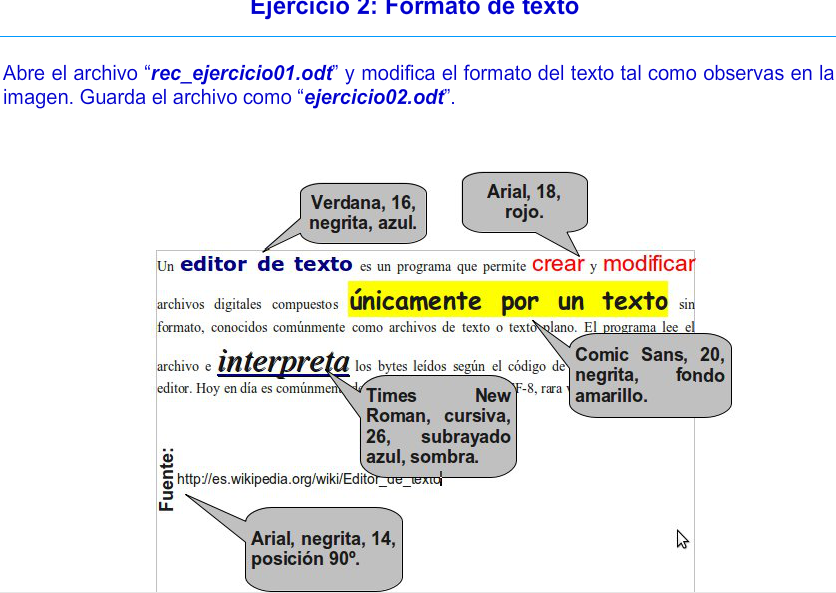
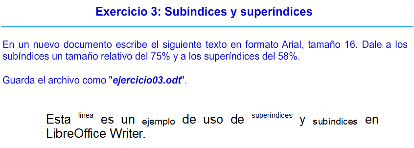

Writer
Esta claro que para poder seguir el curso y realizar los ejercicios. Debemos de tener el Writer instalado. En esta primera lección te enseñare como hacerlo.
-En este apartado no nos vamos a detener mucho ya que lo unico que debes hacer es entrar en este enlace https://www.libreoffice.org/ y pulsar en descargar y al iniciar el instalador pulsar todo siguiente.
En este ejercicio te piden que de los archivos que te dan, si no sabes descargarlos solo tendras que pulsar aquí. El archivo que hemos decargargado estara comprimido, entonces tenemos que descomprimirlo, para eso lo arrastramos al escritorio, y una vez en el escritorio, le daremos click derecho y al botón que pone extraer aquí. Si no puedes descargarlo, no te preocupes, más adelante puedo darte una solución. Por cierto pulsando aquí, accederas a la web que nos dio el profesor donde se encuentran todos los ejercicio, y guias.
-Como podreis ver en la imagen, debemos abrir el ejercicio con el nombre "rec_ejercicio01.odt", como he indicado antes, si habeis tenido alguna dificultad a la hora de descargar y descomprimir el archivo de antes, podeis descargar este archivo directamente pulsando aquí.
Aquí os dejo un video explicativo de como realizar el ejercicio.
Si por algún motivo no podeis descargar el Writer o realizar el ejercicio, podeis descargarlo, ya completado pulsando aquí.
En este ejrcicio nos piden lo siguiente:
Este ejercicio es muy simple, pero al igual que en el anterior te dejare un video y al final por si lo necesiatas un enlace para que puedas desacargarlo.